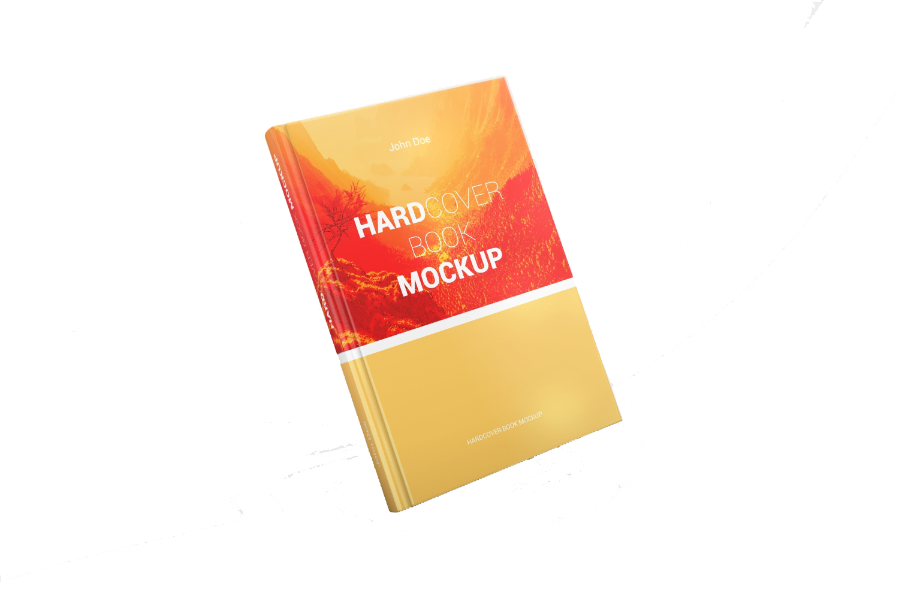

红楼梦
中国古典四大名著之一。小说以贾、史、王、薛四大家族的兴衰为背景，以富贵公子贾宝玉为视角， 以贾宝玉与林黛玉、薛宝钗的爱情婚姻悲剧为主线，描绘了一批举止见识出于须眉之上的闺阁佳人的 人生百态，展现了真正的人性美和悲剧美，可以说是一部从各个角度展现女性美以及中国古代社会 世态百相的史诗性著作。
小王子(Le Petit Prince)
本书的主人公是来自外星球的小王子。书中以一位飞行员作为故事叙述者，讲述了小王子 从自己星球出发前往地球的过程中，所经历的各种历险。作者以小王子的孩子式的眼光， 透视出成人的空虚、盲目，愚妄和死板教条，用浅显天真的语言写出了人类的孤独寂寞、 没有根基随风流浪的命运。同时，也表达出作者对金钱关系的批判，对真善美的讴歌。
顾城诗选-暴风雨使我安睡
童话和哲思都是顾城的诗特点，以优美的诗形式讲了那么多好听的寓言故事， 更是顾城的独树一帜。写诗不为留存，但留世诗歌仍超过两千首(画作几百幅)。 这里辑其童话色彩鲜明的一些短诗和更富于哲思意味的另些小诗各自成集， 同时将其难能可贵的百余首寓言故事诗择九十一首成集。
蛙
小说以中华人民共和国近60年波澜起伏的农村生育史为背景，真实地反映了计划生育国策在高密东北乡艰难推行的过程；通过讲述从事妇产科工作50多年的乡村女医生万心的人生经历，在形象描述国家 为了控制人口剧烈增长而实施计划生育国策所走过的艰巨复杂的历史进程的同时，成功塑造了一个生动鲜明、感人至深的农村妇科医生形象；并结合 计划生育过程中的复杂现象，剖析了以小说叙述人蝌蚪为代表的知识分子卑微、尴尬、纠结、矛盾的精神世界。
湘行散记
饱含沉甸甸的责任意识——面对一种特殊的历史场域，追溯神性生命的始终，透过表层的 血与泪，体验一份人生的庄严。统摄到作者巨大悲悯情感下的书写与反省，是将尖锐的 民族问题与社会矛盾，融汇在人事的叙述中。收入其中的散文，既能各自独立成篇， 又从总体上具有内在的整一性。这种散文长卷的独创，发展了散文艺术的表现形式，开拓了散文创作的意义空间。
追风筝的人
全书围绕风筝与阿富汗的两个少年之间展开，一个富家少年与家中仆人关于风筝的故事 ，关于人性的背叛与救赎。以写实的笔法，诉说着温情与残酷，美丽与苦难，它不仅仅展示了 一个人的心灵成长史，也展示了一个民族的灵魂史，一个国家的苦难史。这部小说流畅自然， 就像一条清澈的河流，却奔腾着人性的激情，蕴含着阿富汗斯坦这个古老国家丰富的灵魂。